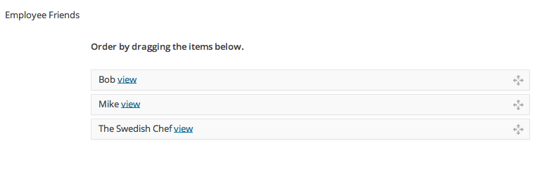

AddBySearch is a Taco add-on that allows you to easily assign relationships to other posts as well as assign an order.
For instance, you have a custom post type of "Employee" and another of "Emergency Contact", each with their own respective fields. What if you wanted to assign many emergency contacts to an employee? This could be done straight from code, but this would require hardcoding and assigning relationships by "ID" which has no meaning. This is no task for someone without any knowledge of code.
It's also fair to say this plugin has other great features included in the UI. Here's a quick breakdown.
Composer is the preferred method for installing AddBySearch. In order to install AddBySearch, you must first install Taco. Go here for more information:
Taco Installation instructions
Add the below to your composer file.
{ "require": { "tacowordpress/addbysearch": "dev-master" } }
In your functions.php file, make sure to initialize Taco followed by AddBySearch.
wordpress/wp-content/your-theme/functions.php
// Initialize Taco \Taco\Loader::init(); // Initialize AddBySearch \AddBySearch\Loader::init();
This plugin relies on Taco (Custom Posts) and is configured through the getFields method.
Here's how to use it.
<?php
/*
Plugin Name: Employee
Version: 1.0
Description: Employee Post Type
*/
class Employee extends \Taco\Post
{
public function getFields() {
return array(
'employee_friends' => array(
'type' => 'text',
'class' => 'addbysearch',
'data-post-type' => 'Employee'
)
);
}
}
The above code will ouput an autocomplete search seen in the next section below.
just use: 'data-single-value'=> true
This will prevent admin users from picking more values from the list until they remove what's already there.
<?php
public function getFields()
{
return array(
'employee_boss' => array(
'type' => 'text',
'class' => 'addbysearch',
'data-post-type' => 'Employee',
'data-single-value' => true
)
);
}
In many cases you may just want the ordering mechanism. The addition of 'data-order-only' => true makes this possible.
<?php
/*
Plugin Name: Employee
Version: 1.0
Description: Employee Post Type
*/
class Employee extends \Taco\Post
{
public function getFields() {
return array(
'employee_friends' => array(
'type' => 'text',
'class' => 'addbysearch',
'data-post-type' => 'Employee',
'data-order-only' => true
)
);
}
}

<?php
global $post;
// load the current post (post type of department)
$department = \Taco\Post\Factory::create($post);
// get the department's list of employees that have been custom picked and ordered by the admin
$employees = \AddBySearch::getPostsFromOrder(
$department->get('employees')
);
if(Arr::iterable($employees)) {
foreach($employees as $employee) {
echo $employee->getTheTitle();
}
}
AddBySearch::getPostsFromOrder(
$string_order = '',
$reverse = true,
$is_term = false,
$taxonomy = null
)
At some point, you may want the data to be filtered differently in the results that show up. For instance. What if you want to show employees under the taxonomy "employee-type" that are assigned the term "human-resources"?
<?php
/*
Plugin Name: Department
Version: 1.0
Description: Department Post Type
*/
class Department extends TacoPost
{
public function getFields() {
return array(
'employees_human_resources' => array(
'type' => 'text',
'class' => 'addbysearch',
'data-post-type' => 'Department::getHumanResourcesEmployeePairs',
'data-order-only' => true
)
);
}
public function getHumanResourcesEmployeesPairs() {
$employees = (new Employee)->getByTerm('employee-type', 'human-resources');
return array_combine(
Collection::pluck($employees, 'ID'),
Collection::pluck($employees, 'post_title')
);
}
}
The above is just short example, but I think you get the idea.
Note: When using a custom method for getting posts, make sure it returns an array where the key is the post id and the value is a descriptor such as the title.
AddBySearch is open source software released under the MIT License. You can View AddBySearch on GitHub to view the license information and to contribute to the project.